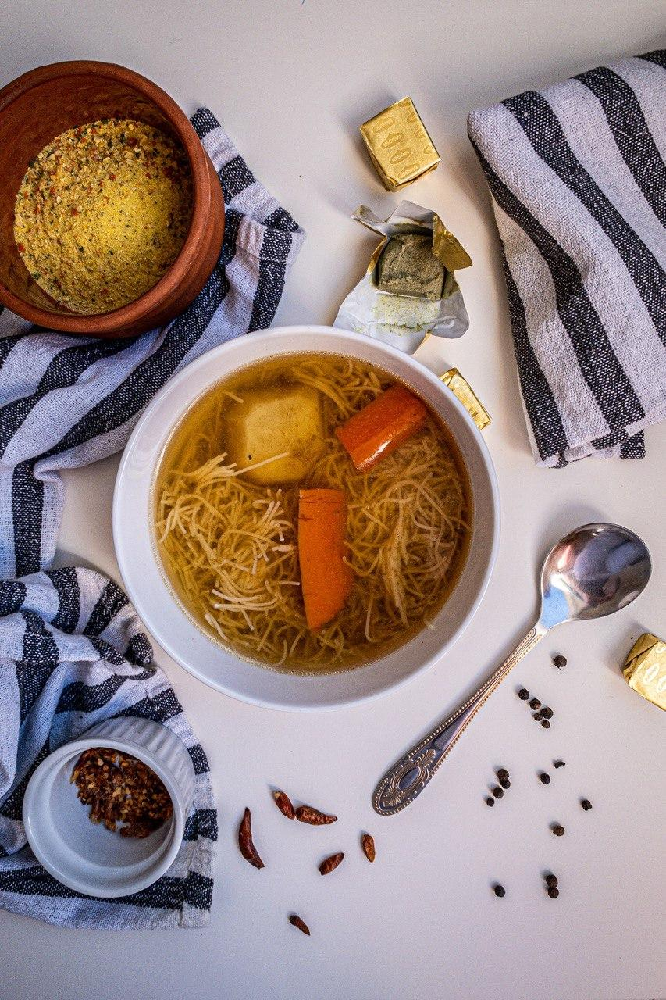
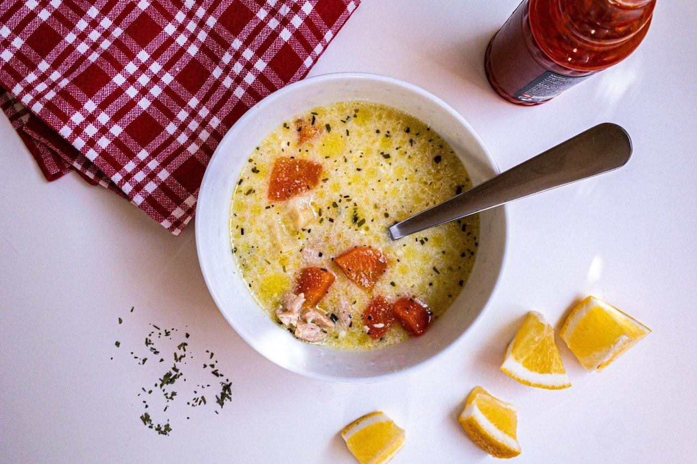

Levesek

Marhahúsleves
Elkészítés: 4 óra
NEHÉZ
Ennél a levesnél még soha nem ettem jobbat. Őszintén! Anyukám csodálatos levese melyet még a mamától tanult. Régen minden egyes vasárnpi ebédnél az asztalomkellett lennie, különben én nem voltam ott.
Recept

Tárkonyos raguleves
Elkészítés: 3 óra
NEHÉZ
IMÁDOM, főleg jó sok citromlevével! Ha hidegen eszed igazán felfrissít, ha forrón akkor meg gyógyító hatása van.
Recept